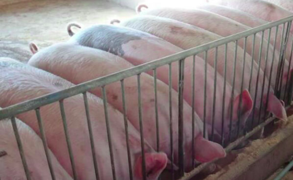

现代科学养猪新技术—原生态养猪

概述：养猪场粪便污染一直是我国养猪业的一大难题，养猪场粪便不仅对养猪场内猪群有较大的疾病传染威胁，
还对周围环境造成严重的污染。之前，我国为此付出较大的努力来研发出好多解决猪场粪便污染问题，
但是效果并不太理想。目前，经过我国养殖专家不懈努力的研究，终于找到了解决猪场粪便污染的技术，
那就是原生态养猪技术。
我国一直倡导科学养猪，但是并没有一套完整的养猪技术，
无法彻底解决养猪场粪便污染问题，如今这个难题已经被解决了，
原生态养猪技术能够无污染的解决养猪场的粪便处理问题，
下面我们一起来探讨一下原生态养猪技术的要点分析。